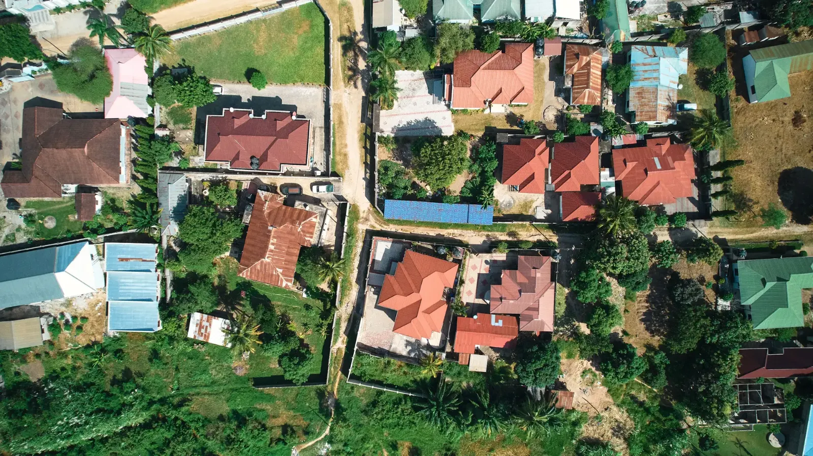

A non-Gambian can hold and deal in Gambian property, but not without restriction, and the rules that decide whether a purchase actually completes are rarely the ones a buyer is told about. This guide sets out what the law says, what is only reported, and what nobody publishes.
Can foreigners own property in The Gambia?
A non-Gambian may hold and deal in Gambian property, and section 22 of the 1997 Constitution protects property against compulsory acquisition without reference to nationality. But that section protects property once it is held; it confers no right to acquire it. Anyone who tells you that non-Gambians face no legal limits at all is wrong, and on the coast the point matters.
The clearest restriction is in the primary regulations. Schedule II to the State Lands Regulations 1995 sets the "General eligibility criteria for grant of land for residential purposes in approved layout plan areas". Paragraph 2 reads, in full:
"A non-Gambian shall not be allocated a plot of land."
The same Schedule bars anyone under 21 (para. 1), sets one plot per person as a general rule (para. 3), bars a person who has sold, assigned or transferred allocated land from being allocated again for five years (para. 4), bars those already holding more than one plot (para. 5), and imposes a five-year bar on those whose plots were re-entered for breach (para. 8).
What that rule does and does not cover
This needs to be stated precisely, because it is the single most consequential sentence on this page. Schedule II governs government allocation — the process by which the State grants a plot in an approved layout area to an applicant. It does not, on its face, prohibit a non-Gambian from taking an assignment of an existing lease from a private holder. That private assignment is the transaction almost every foreign and diaspora buyer actually does: you are not applying to the State for a plot, you are buying out someone who already holds one.
So the practical position is not "foreigners cannot buy". It is that a non-Gambian is shut out of the first-instance allocation queue, and must instead acquire on the secondary market — where a different set of rules bites: the Minister's written consent to the assignment, which is withheld on an undeveloped plot. That is covered in its own section below, and it is where most foreign purchases in The Gambia actually succeed or fail.
Some sources, including the US State Department's 2018 Investment Climate Statement, report that non-Gambians may hold residential land only for up to 21 years, only outside 1.5 km of the high water mark, and only up to 2,500 m². We have not been able to trace that rule to any published Gambian statute or regulation, and it does not appear in the State Lands Regulations 1995. We therefore do not state it as law — but because it would matter enormously on the coast, any non-Gambian buyer should have a Gambian lawyer confirm the position in writing before committing.
New freehold is not available to anyone
Freehold in The Gambia is a closed, pre-1945 class. The Lands Act 1945 converted colonial land into state land and prohibited the creation of new freeholds without the consent of the legislature, and the World Bank's 2017 land governance report records that this prohibition "remains under current law". Surviving freehold grants are essentially Banjul-only. A document offered to you as a new coastal freehold is a red flag, not a prize. Our tenure guide sets out the four things a Gambian seller may actually hold.
Upriver, the cap is not about nationality
Outside the designated state lands areas, the Lands (Regions) Act, Cap. 57:03 applies. Section 4 vests Regions land in the Authorities for the Districts — the District Authorities — with Governors holding consent, registration and appeal roles. Section 5 applies customary law to indigenes. Section 9 caps a non-indigene at a tenancy of fifty years, with an express power to insert a renewal clause for a further fifty. "Indigene" is defined by descent, not by citizenship, so a great many Gambian citizens are non-indigenes too: a diaspora Gambian buying upriver can be caught by the fifty-year cap exactly as a foreigner would be.
Two further sections matter more than the cap. Section 7(1) requires the consent of the Authority for the District before a non-indigene may occupy Regions land at all; section 7(3)(c) limits memorandum-recorded occupation to three years where no lease has been executed. And section 18(1) provides that any alienation of a tenant's interest without the written consent of the Authority and the Minister's approval is null and void — void, not merely voidable. Section 8, which is often misdescribed, requires only that a tenancy of more than three years be created by a written agreement; it is a formality rule, not an approval rule, and section 13 makes a defectively created agreement voidable between the parties.
Note also what the coast is not. Kombo North, Kombo South and Kombo Central were declared state lands with effect from 1 March 1994, so Brufut, Tanji, Sanyang, Gunjur and Kartong are governed by the state lands regime, not by the Lands (Regions) Act. The Act itself vests Banjul and Kanifing Municipality in the State; everything else came in by declaration.
The State Lands Act is Act No. 1 of 1991 (Cap. 57:02). You will see it cited with a 1990 date, which was the year of the bill; the Regulations made under it cite "the State Lands Act, 1991 (Act No. 1 of 1991)", and the World Bank and CIFOR-ICRAF both date it 1991.
Ministerial consent to assign — the step that decides the deal
This is the requirement the older version of this guide omitted, and it is the most important one on the page. Regulation 22 of the State Lands Regulations 1995 sets out the covenants written into every state lease. Regulation 22(l) reads:
"that the lessee shall not subdivide, convey, assign or otherwise alienate the premises or any part thereof by sale, transfer of possession, lease or sublease without the consent of the Minister in writing first obtained and such consent shall not be granted if the lessee has not developed the demised premises in accordance with the covenants in that behalf"
Regulation 22(k) imposes the same requirement on security: the lessee "shall not mortgage or create any charge or encumbrance on the premises without the consent of the Minister in writing first obtained". Regulation 22(g) forbids development without a development permit under the Physical Planning and Development Control Act 1990.
Read together, those covenants produce a consequence that changes how you should think about a Gambian plot:
- An undeveloped state-leasehold plot may not be lawfully assignable until it is built on. The consent that a transfer requires is the same consent the Regulations say shall not be granted where the development covenants have not been met.
- It may not be mortgageable either, for the same reason — which is a better explanation of why Gambian banks are cautious about land security than any story about foreign income being hard to assess. See our mortgage guide.
- Consent is a step, with a duration. The World Bank's Doing Business 2020 study recorded "Application for Ministerial Consent to transfer" as a formal procedure taking 60 days at a cost of GMD 750 — the longest single step in a Gambian conveyance. That is a measurement taken in May 2019, not a current published fee or a promise about your file.
For Regions land the equivalent is section 18(1) of the Lands (Regions) Act, and the sanction there is harsher: without consent and approval, the transaction is void.
What to do about it, in practice: ask to see the written consent before you pay the balance, not after. Consent is granted to the assignor, so it is the seller's document to obtain — build that obligation, and a long-stop date, into the sale agreement. If the plot is undeveloped, treat the transfer as conditional and take Gambian legal advice on whether it can be consented to at all. The World Bank's 2017 report records that participants in its land governance assessment considered the transferability and mortgage consent requirements "cumbersome and unjustified" — which tells you they are real, and that they bite.
The lease itself: term remaining, renewal and ground rent
If you are buying a state leasehold, you are buying the unexpired balance of someone else's lease, not a perpetual interest. Three questions follow, and the old version of this guide asked none of them.
How long is the term, and how much of it is left? The specimen lease in Schedule III of the 1995 Regulations runs "for the term of NINETY-NINE years". Residential leases are 99 years; other uses run 21 to 50 years depending on sector policy and ministerial discretion, and leases in the Regions are capped at 50 years. A lease granted in 1996 has roughly seventy years left, not ninety-nine. Ask for the commencement date on the face of the lease and work from that.
What happens at expiry? Clause 3 of the specimen lease provides that the Minister may grant a further term of ninety-nine years, "provided there shall be no subsisting breach". That is a discretion, not a right of renewal. CIFOR-ICRAF's guide to Gambian land rights records that in practice renewal is close to automatic — but practice is not law, and a subsisting breach of the development or rent covenants is exactly the sort of thing that turns a discretion against you.
What is payable every year? Ground rent, to the Department of Lands, due before 31 January, with forfeiture by re-entry as the sanction for non-payment. Ask the seller for evidence that it is paid up to date, and ask what the current annual figure is before you exchange.
The last published basis for calculating ground rent is Schedule V of the State Lands Regulations 1995 — a slab rate of D10 to D25 per 100 m² adjusted by location and intensity indices, which the Schedule itself works through to D362.50 a year for a 500 m² central residential plot. No revision of that Schedule has been published since 1995, and no Gambian body publishes current ground rent amounts. We cannot tell you what your plot's rent will be; ask the Department of Lands in writing, and do not treat the 1995 figures as current.
One more class of holding you will meet on paper. Section 7(1) of the State Lands Act deems a customary or year-to-year occupier in a designated area to be a lessee of the State for 99 years, and allows them to apply for a formal lease. In practice this is evidenced by a certificate of occupancy. A great deal of Kombo land is held this way. It is a real interest, but it is not a registered lease, and as set out below it cannot be entered on the deeds register at all.
The step-by-step process
The only dated, comparable measurement of the Gambian conveyance is the World Bank's Doing Business 2020 study of Banjul, on data collected in May 2019. It recorded six formal procedures, about 73 to 74 days in total, at 7.8% of property value. Treat the figures below as 2019 measurements, not as current fees.
| Step | What it is | 2019 World Bank measurement |
|---|---|---|
| 1. Deeds search | Search at the Deeds Registry of the Registrar General's Department against the names of the parties | 2 days |
| 2. Deed of assignment | Drawn by a lawyer | 5 days; GMD 42,063, about 2–3% of the price on the standardised case |
| 3. Survey plan | A fresh survey plan for the parcel | 1 day; GMD 2,750 |
| 4. Ministerial consent | Application to the Minister for consent to transfer the lease | 60 days; GMD 750 |
| 5. Tax | Payment of the seller's capital gains tax and the buyer's stamp duty | 1 day |
| 6. Registration | Registration of the deed at the Registrar General's Office | 5 days; GMD 1,500 |
Around that formal spine sit the commercial steps: finding the property, viewing it in person or on a live call, agreeing a price, instructing your own lawyer, and signing a sale agreement. Two points about the commercial steps that the law will not protect you on. Prices on the coast are commonly quoted in US dollars and are negotiable; and deposits should be paid into your lawyer's client account, which you should insist on — no Gambian rule compels it.
Note where step 3 sits. A fresh survey plan is a formal procedure, not optional diligence, and it is also the thing that lets you check that the boundaries on the ground match the boundaries on the paper. Note too that step 5 gates step 6: the seller's capital gains tax has to be paid before the deed can be registered, which makes the seller's tax position your completion risk.
The order that protects you is: search, then consent, then payment of the balance, then stamping, then registration. Money that moves before consent is money at risk.
What a Gambian title search actually checks
Two different offices are involved, and conflating them is how the consent step gets lost. The Ministry of Lands issues leases and grants consents. The Registrar General's Department, in the Attorney General's Chambers and Ministry of Justice, keeps the Deeds Registry under the Land (Registration of Deeds) Act, Cap. 57:01, whose section 3 establishes "an office at Banjul … called the Registry Office". A search of the deeds is done there, not at the Lands Office.
What that search can and cannot tell you:
- It is a deeds register, not a title register. Registration gives priority, not title. Section 7 gives priority from the date of registration.
- It is indexed by the names of the parties, not by parcel (s.5(2)). A Gambian search is a name search — you have to know whose name to look under, which is why establishing the chain of prior owners matters as much as the search itself.
- Only surveyed, mapped land with a unique identity can be registered. CIFOR-ICRAF records that this "excludes all customary land and deemed leasehold land". So for a large share of the plots on sale in Kombo, the central check returns nothing at all — and an absence of adverse entries is not evidence of good title.
- Pending litigation is not on the register. That is a separate enquiry. Mortgages and caveats are on it.
There is no official online deeds search in The Gambia. A website presenting itself as a Gambian land registry is not an official source, and we do not link to any. If a seller or agent offers you an "online registry printout", treat it as evidence of nothing.
The documents a Gambian seller may actually hand you include a Letter of Allocation, an Alkalo Transfer, an Alkalo Certificate of Ownership, an Area Council Transfer, a Certificate of Occupancy, a Lease, a Deed of Conveyance or Assignment, a sketch plan approved by Physical Planning as distinct from an informal hand drawing, and a survey plan. Only some of these are registrable title. Alkalo documents are evidence of a customary allocation, not registrable title, and they are routinely forged: Brikama Magistrate Kanjura B. Sambou observed on 27 August 2026 that it is "increasingly common for a single plot of land to be sold to several individuals, with each buyer subsequently presenting an Alkalo transfer document as proof of ownership." Our title verification guide works through each document type.
Doing it from abroad
A purchase can be run from abroad, but the instrument that makes it possible has a name, and this guide previously never used it: a power of attorney. Without one, someone still has to appear in The Gambia to sign, to swear documents and to lodge them.
What a diaspora or foreign buyer should get right:
- Make the power specific. Identify the plot, the price, and precisely which acts the attorney may do — sign the deed of assignment, apply for the Minister's consent, pay taxes, lodge for registration. A general power invites arguments later.
- Execute it properly where you are, and have it notarised and legalised for use in The Gambia. Ask your Gambian lawyer what the Registry will accept before you sign anything, because requirements differ by country.
- Register the instruments. The Land (Registration of Deeds) Act defines "instrument" broadly enough to take in "any State grant, deed, contract", and "land" to mean "any estate or interest whatever in real property". Registering the sale contract is a real protection if you are paying in instalments.
- Know the deadline you are working to. Under s.7, priority relates back if a deed is registered within 7 days in Banjul or 60 days elsewhere — and 12 months where the instrument was executed outside The Gambia. That year-long window exists for exactly your situation. It is not a reason to wait: until registration happens, a competing deed can be registered ahead of yours.
- Instruct your own lawyer, not the seller's, and get written confirmation of the title type, the residual lease term, the ground rent position and the consent position before you commit.
Getting the money in, and out
The Gambia's exchange rate regime has been free-floating since 1986, restated in the Central Bank's Foreign Exchange Policy of December 2023 under section 64 of the CBG Act 2018. But the same policy allows the Central Bank to "temporarily restrict the purchase, sale, holding or transfer of foreign exchange" to avert a foreign exchange crisis, for up to twelve months and renewable once. That contingent power is worth knowing about before you send six figures.
On taking proceeds out again, we have to be honest: no published Gambian rule either permits or restricts the repatriation of sale proceeds. We do not write that there are no capital controls, because that is not established. What is published is that money transfer operators and fintechs "shall not engage in the buying and selling of foreign exchange currencies in the domestic market", so outward proceeds have to move through a licensed commercial bank.
On cash: section 48 of the AML/CFT Act 2012 requires declaration of US$7,500 or more in cash or bearer instruments, on arrival and on departure, with a fine of not less than D10,000. The Gambia Revenue Authority's customs material gives US$10,000 on import. The two official figures conflict; treat US$7,500 as the safe threshold. Expect identification checks on occasional transactions above D200,000, and questions about purpose, origin and destination for cash transactions above US$10,000. More on transfer routes and costs in our money transfer guide.
MyKunda tip: Listings with a Verified badge have already had their title deed and ownership documents reviewed by a qualified specialist — a strong first filter when you are buying from overseas, and not a substitute for your own lawyer's search and the consent enquiry.
What the state takes: tax and recurring charges
| Charge | Rate | Who pays, and when |
|---|---|---|
| Stamp duty — assignment or conveyance | 2% of the amount | The assignee, that is the buyer. On stamping, before the deed can be registered. |
| Stamp duty — mortgage | 0.5% of the amount | The mortgagee. |
| Stamp duty — lease or tenancy agreement | 2% of the amount | The lessee or tenant; on a tenancy agreement, the landlord or tenant. |
| Capital gains tax — individual seller | The higher of 15% of the gain or 5% of the consideration | The seller. Payable before the deed can be registered; GRA gives a return deadline of 15 days from the transaction. |
| Capital gains tax — company, partnership or trustee seller | The higher of 25% of the gain or 10% of the consideration | The seller. Same timing. |
| Rental income tax | 8% of gross residential rent; 15% of gross commercial rent; no deductions allowed | The landlord, resident or non-resident. Quarterly by the 15th after quarter end; annual return by 31 March; final tax. |
| VAT | 15% | Charged by VAT-registered suppliers on legal fees, agency fees and building contracts. Compulsory registration at D2,000,000 of taxable supplies. Residential rent is exempt. |
| Ground rent on a state lease | Not currently published — see above | The lessee, annually, to the Department of Lands before 31 January. Re-entry for non-payment. |
| Area Council rate | Not published as a national figure | The owner of developed property, annually, under the General Rate Act 1992 with valuation under the Rating Valuation Act 1987. |
Why you will be quoted 5%, and why it is not stamp duty
Stamp duty on a purchase is a flat 2%, paid by the buyer. That comes from the Stamp Act (Amendment of Schedule) Order, 2019 — Legal Notice No. 18 of 2019, Gazette No. 34 of 4 October 2019 — which sets 2% for an assignment or conveyance and names the assignee or transferee as the person primarily liable.
Older sources say 5%, and there are two reasons. The World Bank's LGAF report of 2017 reports "a fixed stamp duty cost of 5% payable by the buyer", and Doing Business 2020 records a single combined procedure — "Payment of Capital Gains Tax and Stamp Duty … 5% of the purchase price (Stamp Duty)" — on data collected in May 2019, before the September 2019 Order, and aggregating the seller's capital gains tax with the duty. So the "5% transfer tax" a Gambian buyer is quoted is usually the seller's capital gains tax floor being described loosely, not a duty on the buyer. There is no Gambian tax called a transfer tax. Ask the GRA or your lawyer to confirm in writing what rate is being applied to your deed before you fund completion.
Two procedural rules from the Stamp Act are worth carrying with you. Section 29: no deed may be registered unless it is duly stamped. Section 17: an unstamped instrument is inadmissible in evidence. An unstamped deed is not a cheap deed; it is a deed you cannot use.
"There is no property tax in The Gambia" is wrong
There are two recurring charges on a developed Gambian property. Annual ground rent on a state lease, above. And an annual local rate levied by the Area Council: the Local Government Revenue Initiative records that the eight local governments are empowered by the General Rate Act 1992 to levy property rates, valued under the Rating Valuation Act 1987. We attribute that to LoGRI rather than quoting the Act, because the text of the General Rate Act could not be obtained.
It is often said that unpaid Area Council rates follow the property to the new owner. We could not find any Gambian source establishing that rates arrears run with the land. Do not treat it as settled either way: ask the relevant Area Council, in writing, whether arrears are outstanding and whether they must be cleared before transfer, and have your lawyer put a warranty and a retention in the sale agreement.
The Gambia Revenue Authority rolled out the first phase of a Rental Compliance System in October 2025, as reported by The Point on 8 January 2026 — a single source, so we attribute it. If you intend to let the property, read our letting guide as well.
The real total cost, and how long it takes
Nobody in The Gambia publishes a current, consolidated schedule of conveyancing costs. What exists is the World Bank's 2019 measurement of 6 procedures, about 73 to 74 days, and 7.8% of property value for Banjul — and even that is now seven years old, and its 7.8% includes stamp duty at the pre-Order 5%.
Rebuilt on the rates we can source today, a buyer should budget for:
- Stamp duty at 2% of the price, on you as the buyer (2019 Order).
- Legal fees — the standardised World Bank case put the deed of assignment at about 2–3% of the price in 2019. No Gambian scale of fees is published; agree a fee in writing before instructing.
- VAT at 15% on legal and agency fees where the supplier is VAT-registered. This is missing from most cost estimates you will be shown.
- Survey plan, consent application and registration — measured at GMD 2,750, GMD 750 and GMD 1,500 respectively in 2019. Expect these to have moved.
- The seller's capital gains tax, which is not your cost but is your risk, because registration cannot happen until it is paid.
- Agency commission — no reliable Gambian benchmark and no statutory cap exist. Get it in writing.
On timing: the consent application alone was measured at 60 days. Budget in months rather than weeks, and do not accept a completion date from anyone who has not yet lodged the consent application. We are not promising a timeline — nobody can. Our costs guide works through a full example.
Common mistakes to avoid
- Treating an undeveloped plot as freely resaleable. Regulation 22(l) says consent shall not be granted where the premises have not been developed. Buying land to flip is the transaction most likely to fail on consent.
- Paying before consent and registration. Stage the money: deposit into a lawyer's client account, balance on consent, registration immediately on completion.
- Relying on an Alkalo document as title. It is evidence of a customary allocation and is routinely forged.
- Assuming a search will find something. Customary land and deemed-leasehold land are not registrable at all. A nil result can mean the plot is unregistrable, not that it is clean.
- Skipping the survey. It is a formal procedure in the conveyance, and it is your only check that the boundaries on the ground match the paper.
- Buying a "new freehold". New freeholds cannot be created. The document is not what it says it is.
- Ignoring the residual lease term and the ground rent arrears. Both are the seller's problems until completion and yours afterwards.
The named fraud patterns are worth memorising. The Minister for Lands, Hamat N.K. Bah, told The Point on 14 July 2025 that over D500 million had been stolen from Gambians through "fake leases, double sales, and phantom plots". That figure is his assertion, not an audited number, and we report it as such — but the three patterns are the ones to test for: verify the lease against the Ministry's own file, confirm the assignor is the person named on it, confirm that consent was actually granted rather than merely applied for, and walk the survey plan on the ground.
If you are buying on the coast
Three coastal-specific points. Under the environmental assessment rules, Class A — full impact assessment — includes major structures within 150 metres of the high water mark, so a beachfront build is not the same planning proposition as an inland one. The West Coast Tourism Development Area runs from Kotu to Kartong, 800 metres inland from the high water mark, on leased state land under Gambia Tourism Board custody; that 800-metre band is a tenure control, not an erosion setback, and all new TDA land applications have been suspended since 23 January 2025 pending an audit. And on erosion itself, the World Bank's Beyond the Tide report of 28 February 2026 measures shoreline retreat of up to 4.7 metres a year on the tourism corridor and states that "no formal setback zones or planning restrictions exist yet" — there is no statutory erosion buffer to rely on. Our coastal areas guide goes area by area.
Your estate agent is not licensed
This matters more to a remote buyer than to anyone else, because the agent is often the only person you have met.
There is no licensing regime, no professional register and no designated licensing regulator for Gambian estate agents. The GIABA/FATF mutual evaluation of 2022 puts it plainly: "No competent authority has been designated for licensing or registering and regulating the real estate sector." FATF also refers to "the unknown number of operators", so nobody can even tell you how many agents there are.
But "no regulator at all" would be wrong too. Estate agents are reporting entities under section 41(b) of the AML/CFT Act 2012, supervised by the Financial Intelligence Unit, and consumers can complain to the Gambia Competition and Consumer Protection Commission. A Real Estate Agents Bill was validated at a national stakeholder workshop on 29 April 2026, but as at 31 August 2026 it does not appear among the bills before the National Assembly and its text is unpublished, so we do not describe what it would require. Our agent regulation guide covers this in full.
Two consequences for you. There is no statutory client-account or escrow rule for Gambian agents, so purchase money going into "the agent's account" carries no legal protection; insist on your lawyer's client account, while understanding that no Gambian rule compels that either. And there is no published commission benchmark and no statutory cap, so the fee is whatever you agree in writing.
If you are the seller
Most of this guide reads from the buyer's side. If you are the one selling — to a foreign buyer or to anyone else — these are the questions that decide whether your sale completes.
Who pays capital gains tax, at what rate, and when
You do. An individual seller pays the higher of 15% of the gain or 5% of the consideration. A company, partnership or trustee pays the higher of 25% of the gain or 10% of the consideration — so selling through a company roughly doubles the floor. The GRA gives a return deadline of 15 days from the transaction, and the tax is payable before the deed can be registered. That timing is the point: your tax is not a post-sale tidy-up, it is a gate on the buyer's registration, and a buyer's lawyer will hold the balance until it is dealt with. A D24,000 exemption and private-residence and agricultural reinvestment reliefs exist, with occupation and reinvestment conditions; ask the GRA how they apply to you rather than assuming.
Will consent be refused because my plot is undeveloped?
On the face of regulation 22(l), yes. Consent to assign "shall not be granted if the lessee has not developed the demised premises in accordance with the covenants in that behalf". If you are marketing an undeveloped state-leasehold plot, the honest position is that the transfer may not be consentable at all until the development covenants are met. Establish the position with the Ministry of Lands before you accept a deposit, and tell the buyer what you find. A sale that collapses on consent after months is worse for you than a slower start.
If I sell, can I be allocated another state plot?
Not for five years. Schedule II, paragraph 4 of the State Lands Regulations 1995 provides that a person who sold, assigned or transferred allocated land shall not be considered for allocation again up to five years from the date of the sale, assignment or transfer. Paragraph 5 separately disqualifies anyone already holding more than one plot, freehold or leasehold, and paragraph 8 imposes a five-year bar on those whose plots were re-entered for breach. If part of your plan is to sell one allocated plot and apply for another, that plan does not work.
Can I sell to a non-Gambian at all?
Schedule II paragraph 2 bars allocation to a non-Gambian; it does not on its face bar an assignment to one. Ministerial consent is required either way. The reported 21-year, 1.5 km and 2,500 m² limits set out in the uncertainty box above, if they are applied in practice, would restrict who may buy coastal residential land from you and on what terms. This is genuinely unsettled on the published sources, and it is a question for a Gambian lawyer, not for a portal.
What to perfect before you market
- The lease or certificate of occupancy in your own name, with the chain from the original grant documented.
- The consent position — including any consent that should have been obtained on an earlier transfer into your name. A gap in the consent history upstream is a defect in your title.
- Ground rent paid to date, and evidence of it.
- The Area Council rate position, in writing from the Council.
- An approved survey plan that matches the ground, and a Physical Planning-approved sketch plan rather than a hand drawing.
- Your deed registered at the Deeds Registry — if it is not registered, your priority is not protected.
- If the property came to you through an estate: a grant of probate or letters of administration, and for a Muslim estate a Cadi Court distribution order, before you market it. See our inheritance guide.
Family and co-heir claims
On Regions land, occupation and use by indigenes is governed by customary law, and family or community land commonly has more than one claimant. Buyers are warned about this constantly; sellers are not, and it is the seller who carries the warranty risk if a claim surfaces after completion. Establish who must consent within the family before you take a deposit.
Getting paid, and getting proceeds out
The dalasi floats freely, but as set out above the repatriation of sale proceeds is not addressed by any published rule, and outward funds must move through a licensed commercial bank rather than a money transfer operator. Agree the currency, the route and who bears the exchange risk in the sale agreement, and expect anti-money-laundering questions on a large inward payment. Finally, remember that your agent is unlicensed, that no client-money rule protects the purchase price in their hands, and that there is no published commission norm to appeal to.
The market you are buying into
- Remittances are large and rising. The Central Bank of The Gambia reported remittance inflows of US$872.14 million in 2025, up 12.4% on 2024's US$775.6 million (CBG Monetary Policy Committee, 26 February 2026). Be careful with this number: the CBG's balance of payments table shows workers' remittances of US$507.8 million and the World Bank records US$529.05 million, so three official measures sit roughly 50% apart.
- But remittances are not mostly going into land. The CBG's own Household Remittance Survey, run in April and May 2024 with 32,783 responses and published in the CBG Annual Report 2024, attributes 76.8% of remittances to household consumption and 4.0% to construction. The common claim that a substantial share flows into land and building is not supported by the Central Bank's data.
- Growth forecasts genuinely conflict. For 2026: the World Bank's Macro Poverty Outlook of 16 April 2026 gives 5.3%; the CBG gave 6.2% in February 2026 and 5.8% in August 2026; the African Development Bank gives 4.9%. The 5.7% figure that circulates is the CBG's estimate of actual 2025 growth, not a 2026 projection.
- Inflation. The CBG's Monetary Policy Report of February 2026 puts 2025 average inflation at 7.6%; the AfDB, on 16 June 2026, says it "declined to 7.5% in 2025 from 11.6% in 2024". Through 2026 the monthly rate has moved between 6.4% in January and 7.6% in June, at 7.0% in July.
- Tourism. 233,113 arrivals in 2025, up 3% on 2024 — a single government figure, from the National Economic Council report and repeated in the State of the Nation Address of 26 March 2026. For context, the World Bank recorded 235,800 arrivals in 2019, so 2025 remains marginally below pre-pandemic.
- Borrowing. The policy rate is 14%, cut from 16% in February 2026 and held on 21 May and 20 August 2026, with the standing lending facility at 15% and the standing deposit facility at 5%. None of those is a rate you can borrow at.
- Currency risk is real and measurable. The CBG's February 2026 report records the dalasi falling 11.53% against the euro and 4.36% against the dollar over the year. If your income is in euros and your build costs are in dalasi, that moves in your favour; if you are holding dalasi assets against a euro liability, it does not.
No licensed Gambian bank publishes a mortgage rate, tenor or loan-to-value ratio, and the Central Bank publishes no average lending rate. The figures that are published come from third parties: a World Bank/IMF lending rate of 22% for 2024 and 2025; a mortgage rate of 19.5% from the Centre for Affordable Housing Finance in Africa; a prevailing range of 9–17% sourced to the GCCPC; a maximum term of 20 years and deposits of 20–35%. We publish those with their attributions and do not average them into a single number. One rule that is published and is specific to you: the Social Security and Housing Finance Corporation's own mortgage process page states that "Non-Gambian nationals can purchase complete housing units only with an additional levy of 20% on the price".
The structural reason mortgage finance is scarce is legal rather than monetary: regulation 22(k) requires the Minister's consent before a state lease can be mortgaged at all, and a lender's security over an undeveloped plot is weak because the consent needed to sell on enforcement is withheld until the build covenants are met. Most purchases are therefore cash or on developer instalments — see our developer finance guide, and note that The Gambia has no statutory regulation of off-plan sales, no developer licensing, no mandatory escrow and no buyer-deposit protection.
One thing buying does not get you: a right to live here. Property ownership confers no residence right, and The Gambia has no golden visa and no retirement visa. Permits are a separate matter, covered in our residency guide.
Questions people actually ask
Can a non-Gambian buy a house on the Kombo coast?
In practice, by taking an assignment of an existing state lease, yes — that is the route foreign and diaspora buyers use. What a non-Gambian cannot do is be allocated a state plot in the first instance: Schedule II, paragraph 2 of the State Lands Regulations 1995 says "A non-Gambian shall not be allocated a plot of land." Every assignment still needs the Minister's written consent.
Is it true that foreigners can only hold coastal land for 21 years?
We cannot confirm it. The US State Department's 2018 Investment Climate Statement reports a 21-year limit, a 1.5 km high-water-mark exclusion and a 2,500 m² cap, and a Gambian law firm repeats it, but we could not trace the rule to any published Gambian statute or regulation and it does not appear in the State Lands Regulations 1995. Have a Gambian lawyer confirm the position in writing before you commit.
Do I need the Minister's consent, and how long does it take?
Yes, for any assignment, sublease or mortgage of a state lease, under regulation 22(l) and 22(k) of the State Lands Regulations 1995. The World Bank measured the consent application at 60 days and GMD 750 in 2019 — the longest single step in a Gambian conveyance. That was a 2019 measurement, not a current fee or a promise.
I want to buy an undeveloped plot and build later. What is the catch?
Regulation 22(l) provides that consent to assign shall not be granted if the lessee has not developed the premises in accordance with the covenants. So an undeveloped state-leasehold plot may not be lawfully assignable, or mortgageable, until it is built on. That affects both your purchase and your ability to sell it on.
How many years are left on the lease, and what happens at the end?
A residential state lease runs 99 years from its commencement date, so ask for that date and subtract. At expiry, clause 3 of the specimen lease says the Minister may grant a further 99-year term provided there is no subsisting breach. Renewal is a discretion, not a right, though CIFOR-ICRAF records that in practice it is close to automatic.
Is there anything to pay every year?
Yes. Ground rent on a state lease is payable to the Department of Lands before 31 January, with re-entry for non-payment, and Area Councils levy an annual rate on developed property under the General Rate Act 1992. Current ground rent amounts are not published; the only published basis is Schedule V of the 1995 Regulations, which has not been revised in public since.
Can I buy without coming to The Gambia?
Yes, through a power of attorney executed where you live, notarised and legalised for use in The Gambia. Make it specific to the plot and the acts you are authorising, and ask your Gambian lawyer what the Registry will accept before you sign. A deed executed outside The Gambia has a 12-month window for priority to relate back on registration, but you should register at once rather than rely on it.
Will a title search find the plot?
Not always. The Deeds Registry at the Registrar General's Department is a deeds register indexed by the names of the parties, not by parcel, and only surveyed, mapped land with a unique identity can be registered. Customary land and deemed-leasehold land cannot be registered at all, so a nil result may mean the plot is unregistrable rather than clean.
What does the state actually charge me on a purchase?
Stamp duty of 2% of the amount, payable by you as the buyer, under Legal Notice No. 18 of 2019. The 5% figure you may be quoted is either the pre-2019 rate recorded by the World Bank or, more often, the seller's capital gains tax floor described loosely. There is no Gambian tax called a transfer tax.
Is there an annual property tax?
Yes, in substance. Area Councils levy annual rates on developed property under the General Rate Act 1992, valued under the Rating Valuation Act 1987, and a state lease also carries annual ground rent. Saying "there is no property tax in The Gambia" is wrong.
Does buying property give me residency?
No. Property ownership confers no residence right, and there is no golden visa and no retirement visa. Residence permits are a separate application under separate rules.
Can I get a mortgage as a foreigner?
Rarely, and no licensed Gambian bank publishes a mortgage rate, tenor or loan-to-value ratio. Mortgaging a state lease needs the Minister's consent under regulation 22(k), and security over an undeveloped plot is weak. The SSHFC's own mortgage process page states that non-Gambian nationals can purchase complete housing units only with an additional levy of 20% on the price.
Can I take my money out when I sell?
We cannot say that you can, because no published Gambian rule either permits or restricts the repatriation of sale proceeds. The exchange regime is free-floating, but the Central Bank may temporarily restrict foreign exchange transfers for up to twelve months, renewable once, and outward funds must move through a licensed commercial bank rather than a money transfer operator.
As a seller, what is most likely to hold up my sale?
Three things: ministerial consent, which will be refused if the plot is undeveloped; your capital gains tax, which must be paid before the buyer's deed can be registered; and any gap in the consent history on an earlier transfer into your name. Selling an allocated plot also bars you from another state allocation for five years under Schedule II, paragraph 4.
Sources
Every figure on this page is dated and attributed. Where no reliable Gambian source publishes a number, we say so rather than estimating. Last checked 31 August 2026.
- State Lands Regulations, 1995 — Legal Notice No. 13 of 1995, Gambia Gazette Supplement "A", 3 May 1995. Schedule II para. 2 (non-Gambian allocation bar) and paras. 1, 3, 4, 5 and 8; reg. 22(g), 22(k) and 22(l) on development permits, mortgage and consent to assign; Schedule III specimen 99-year lease and renewal clause; Schedule V ground rent basis.
- Lands (Regions) Act, Cap. 57:03 — Laws of The Gambia, Issue 1/2009, consolidated to 2009. s.4 District Authorities; s.5 customary law; s.7 consent to occupation and the three-year memorandum limit; s.8 written agreement; s.9 fifty-year cap on a non-indigene; s.13 voidable agreements; s.18(1) alienation without consent null and void.
- Constitution of the Republic of The Gambia, 1997, reprinted 2002. s.22 protection from compulsory acquisition, expressed without nationality distinction.
- Land Acquisition and Compensation Act, Cap. 57:06 (Act No. 5 of 1991), commenced 27 December 1991. The compulsory acquisition and compensation procedure that sits behind Constitution s.22.
- World Bank — Doing Business 2020, Gambia, The: economy profile, data collected May 2019. Six registration procedures, ~73–74 days and 7.8% of property value; ministerial consent 60 days and GMD 750; survey plan GMD 2,750; registration GMD 1,500; the pre-Order 5% stamp duty figure.
- World Bank — Land Governance Assessment Framework, The Gambia, final report, 2017. The 1945 prohibition on new freeholds "remains under current law"; the 5% stamp duty then reported as payable by the buyer; ministerial consent described as a live friction on transfers and mortgages.
- CIFOR-ICRAF — A Guide to Land Rights in The Gambia, 2024. Declaration of Kombo North, South and Central as state land; residential leases at 99 years with other uses at 21–50; renewal close to automatic in practice; only surveyed, mapped land can be registered, which excludes customary and deemed-leasehold land.
- Gambia Revenue Authority — Domestic Taxes FAQs, retrieved 31 August 2026. Capital gains tax for individuals at the higher of 15% of the gain or 5% of the consideration; rental income tax at 8% residential and 15% commercial on gross rent.
- Gambia Revenue Authority — Capital Gains Tax leaflet, retrieved 31 August 2026. Companies, partnerships and trustees at the higher of 25% of the gain or 10% of the consideration; the D24,000 exemption and reinvestment reliefs; the 15-day return deadline.
- Gambia Revenue Authority — Stamp Act (Amendment of Schedule) Order, 2019, Legal Notice No. 18 of 2019, Gazette No. 34 of 4 October 2019, made 24 September 2019 (schedule PDF hosted on gra.gm). Assignment or conveyance at 2% of the amount with the assignee primarily liable; mortgage at 0.5%; lease and tenancy agreements at 2%.
- Central Bank of The Gambia — Monetary Policy Report, February 2026. 2025 average inflation 7.6%; remittances US$775.6m in 2024 and US$872.14m in 2025; policy rate cut to 14%, standing lending facility 15%, standing deposit facility 5%; the dalasi down 11.53% against the euro and 4.36% against the dollar.
- Central Bank of The Gambia — Monetary Policy Committee press releases, meetings of 21 May and 19–20 August 2026. Policy rate held at 14%.
- Central Bank of The Gambia — Foreign Exchange Policy, December 2023. Free-floating regime under s.64 of the CBG Act 2018; the Bank's power to restrict foreign exchange transactions temporarily; money transfer operators barred from domestic foreign exchange dealing.
- Local Government Revenue Initiative — The Gambia, page last modified 7 May 2026. The eight local governments levy annual property rates under the General Rate Act 1992, valued under the Rating Valuation Act 1987.
- US Department of State — 2018 Investment Climate Statement: The Gambia, 2018. The reported 21-year term, 1.5 km high-water-mark exclusion and 2,500 m² cap on foreign residential holdings, which we could not trace to Gambian law and therefore do not state as law.
- The Point — Lands Ministry declares war on estate agents, 14 July 2025. The Minister for Lands' assertion that over D500 million has been lost, and the named patterns of fake leases, double sales and phantom plots.
- Kerr Fatou — The Gambia records 233,113 tourist arrivals in 2025, government says, 16 March 2026. The 2025 arrivals figure and the reported 3% increase, sourced to the National Economic Council.
- African Development Bank — The Gambia Economic Outlook, updated 16 June 2026. Inflation down to 7.5% in 2025 from 11.6% in 2024, and a 2026 growth projection of 4.9%, against the World Bank's 5.3% and the CBG's 5.8–6.2%.
This guide is general information, not legal, tax or financial advice. Gambian law and practice change, and how a rule applies depends on your documents. Take advice from a Gambian lawyer before you commit to anything.